R/Pharma 2026 · Keynote
Building open-source clinical trial tools with agentic AI
Jeremy Wildfire · 21 October 2026 · jwildfire.github.io/keynote
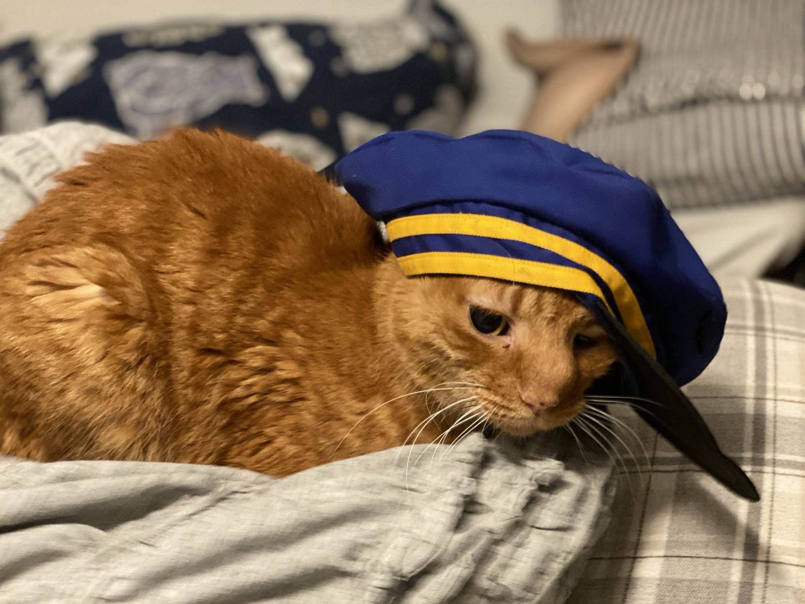
First, a key collaborator
Introducing Orange
2008–2022
He was a very good cat.
A quick disclaimer
Jeremy works for the Biostat Innovation Group at Gilead, but this is all just his opinions.
The question
What can we actually do with AI agents right now?
Orange
SafetyGraphics 2016–2021
OpenRBQM 2021–2025
Experiments on the AI Frontier summer 2026
AI in the Clinical Trial Pipeline Q4 2025
What we learned now
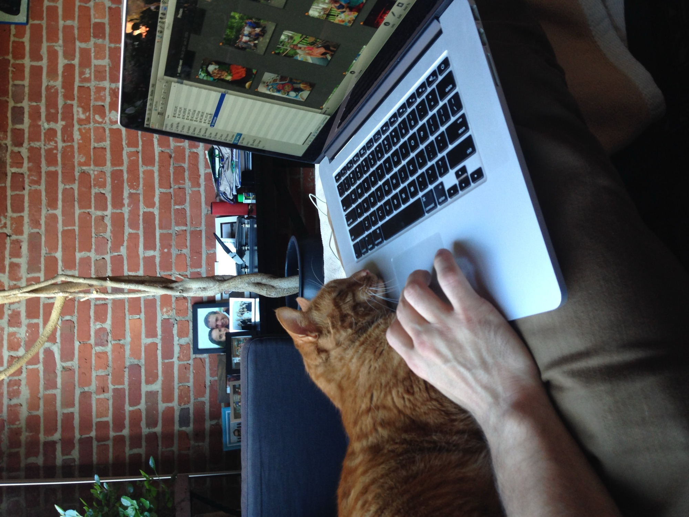
Orange, at work
Open Source SafetyGraphics
Such a helpful coworker
2012
Why can't I do this for work?
Interactive graphics in the New York Times
Page 1 of 18
A standard adverse events table
The Rho Graphics Group
A handful of webpages beats a massive table
The Adverse Event Explorer · open source, in the browser
ASA–DIA Safety Working Group
SafetyGraphics, and the people who built it
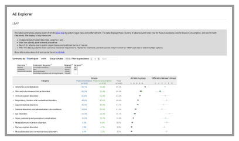
AE Explorer 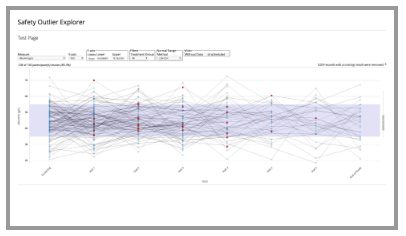
Outlier Explorer 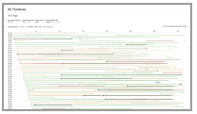
AE Timelines 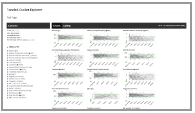
Paneled Outlier Explorer 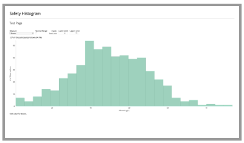
Histogram 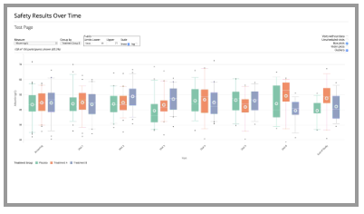
Results Over Time 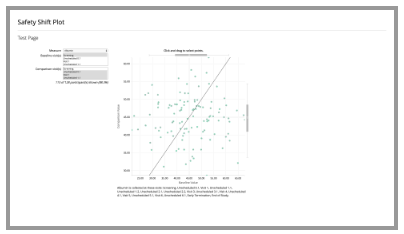
Shift Plot 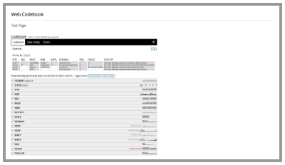
Web Codebook The Safety Explorer Suite · Therapeutic Innovation & Regulatory Science, 2018
At R/Pharma in 2020: SafetyGraphics v2.0, the talk
The best thing we built
The hepatic explorer, and a clinical workflow to go with it
The explorer · eDISH, the standard plot for drug-induced liver injury
The workflow · step 1 of 9, as it reads in safety.viz today
Introducing Inspector Orange
The first question, in every talk
What evidence do you have?
Written requirements and a manual test script for every chart.
JW
Not really. It’s exploratory.
JW
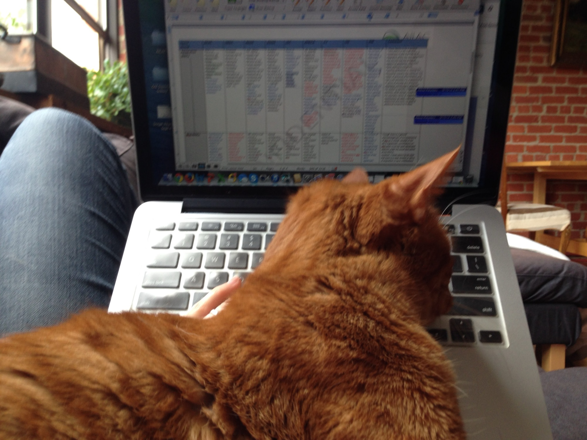
Orange, reviewing
OpenRBQM
Open-source Risk Based Quality Management.
OpenRBQM · Good Statistical Monitoring
Monitoring a trial, as software
How the software gets made
A standard development lifecycle
Design
Gather requirements
Write the work item
Draft the technical plan
Build
Write the tests
Review the tests
Implement
Draft the change summary
Check code quality
Approve
Publish
Automated gates
Quality documentation
Draft the documentation updates
Finalize and release
Publish
Continuous Qualification is Embedded in the Lifecycle
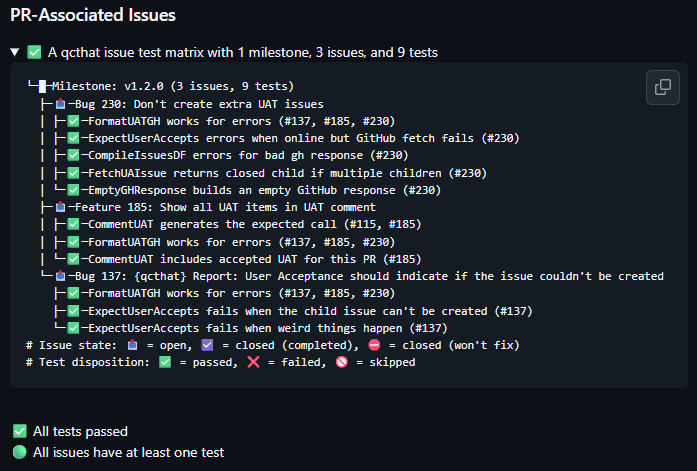
Quality · qcthat
Quality scales across full package ecosystem
76
qualified releases across 9 packages
Every release, its qualification, and the date of each, in one registry
Package Version Released Qualified gsm.app v2.5.3 2025-08-20 2025-08-22 gsm.app v2.6.1 2025-09-24 2025-10-01 gsm.core v1.0.0 2025-03-14 2025-04-21 gsm.core v1.1.0 2025-04-11 2025-04-21 gsm.kri v1.0.0 2025-03-14 2025-03-14 gsm.kri v1.1.0 2025-04-14 2025-04-21 gsm.mapping v1.0.0 2025-03-14 2025-03-14 gsm.mapping v1.0.1 2025-04-11 2025-04-21 gsm.reporting v1.0.0 2025-03-14 2025-03-14 gsm.reporting v1.0.1 2025-04-15 2025-04-21
Sample rows from qualified-releases.csv
Now that's evidence.
In use on 20+ trials
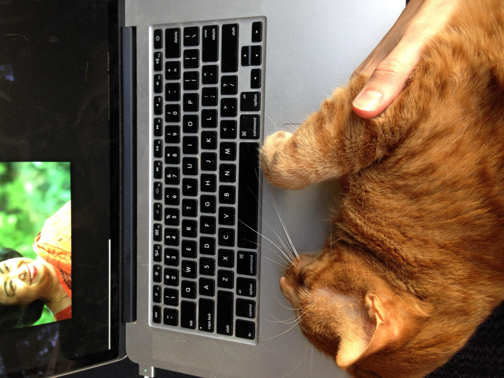
Orange, in the pipeline
AI in the Clinical Trial Pipeline
Carefully adding agents to our package development process.
AI in the pipeline
We use AI heavily, but it's not autonomous. Humans own the process and all deliverables.
— developer diary #1, 10 June 2026
What are agents good at now?
Writing code!
as of Q4 2025
👍
Levels of AI usage
How much do you hand over?
5
The dark software factory Nobody reads the code at all 4
The engineering team You write the specs and plans; agents do the work 3
The developer It writes most of the code; you review all of it ← the day job 2
The junior developer You pair with it and still read every line ← the day job 1
The coding intern It writes the boilerplate; you check everything 0
Spicy autocomplete It finishes your line
Levels: Dan Shapiro, The Five Levels · via Simon Willison's write-up · January 2026
Levels of AI usage
5 The dark software factory 4 The engineering team 3 The developer 2 The junior developer 1 The coding intern 0 Spicy autocomplete
What AI in the pipeline looks like
Same lifecycle; Directly Responsible Humans
Design
Gather requirements
Write the work item
Draft the technical plan
Review the plan, then prompt
Build
Write the tests
Review the tests
Write code
Draft the change summary
Check code quality
Approve
Publish
Automated gates
Quality documentation
Draft the documentation updates
Finalize and release
Publish
What are agents good at now?
The standard SDLC
as of Q2 2026
👍
What evidence do you have?
The same tests,
Where we put the effort
Faster code; planning and operations have to catch up
Upstreamour scaffold
Planning
Requirements
Designs
Phase gates
The standard development lifecyclevendor coding agents, plus our shared context and conventions
Design
Work item
Technical plan
Publish
Quality gates
Documentation
Release
Downstreamour scaffold
Operations
Study set-up
Snapshot schedules
Monitoring plan checks
Build roadmap
Make R packages
Run packages on studies
Levels of AI usage
5 The dark software factory 4 The engineering team 3 The developer 2 The junior developer 1 The coding intern 0 Spicy autocomplete
Where that leaves us
We're having great success at level 2.5!
Efficiency gains
Same process! — people own every requirement, review and release
But what's next …
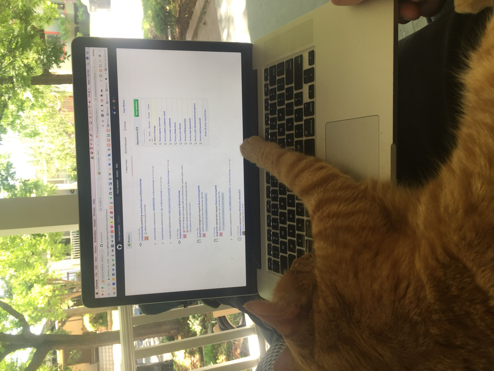
Orange, on GitHub
Experiments on the AI Frontier
A summer of public experiments
Enter Hacker Orange
What can we actually do with AI agents right now?
Only one way to find out.
Oh jeez. I'll check in later.
The goal
Modernize SafetyGraphics, using the OpenRBQM framework
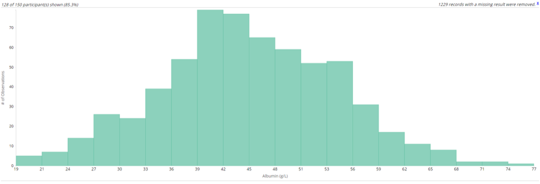
2020 Safety Histogram 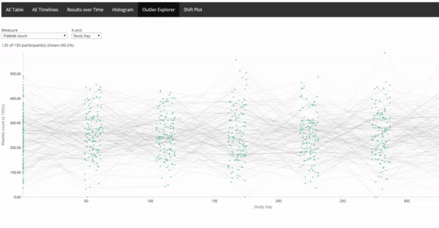
2021 Outlier Explorer 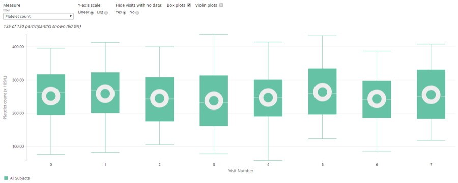
2019 Results Over Time 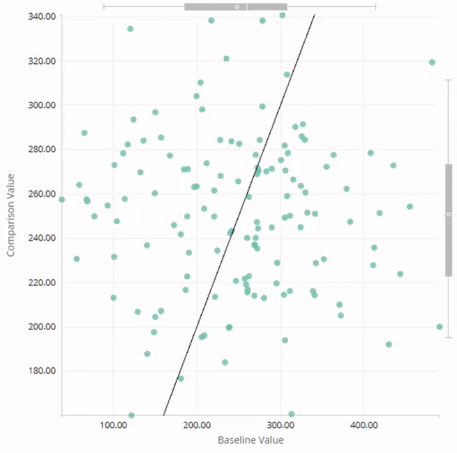
2019 Shift Plot 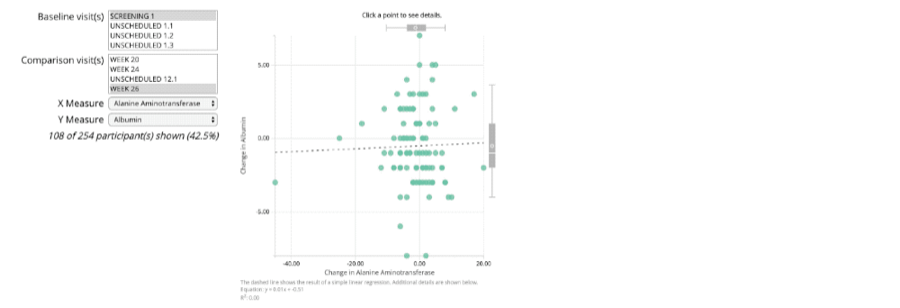
2019 Delta-Delta 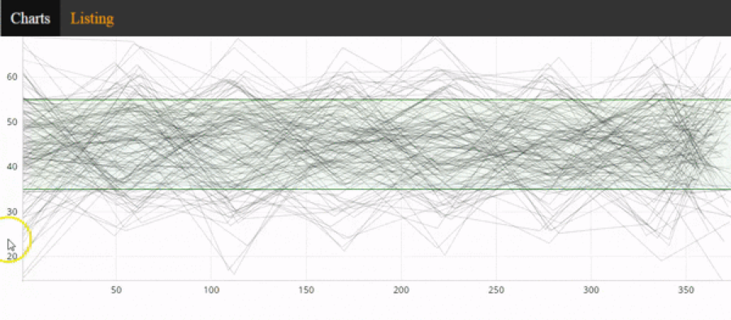
2019 Paneled Outlier Explorer 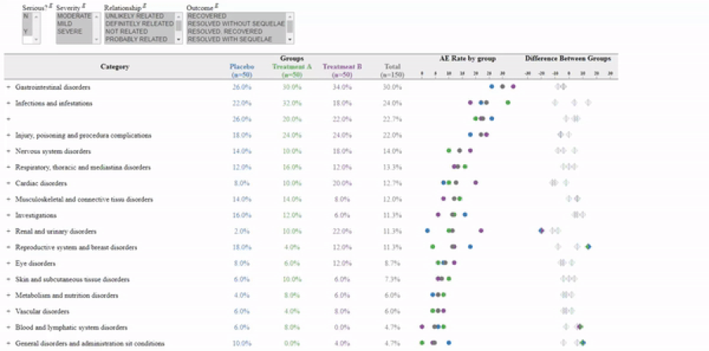
2020 AE Explorer 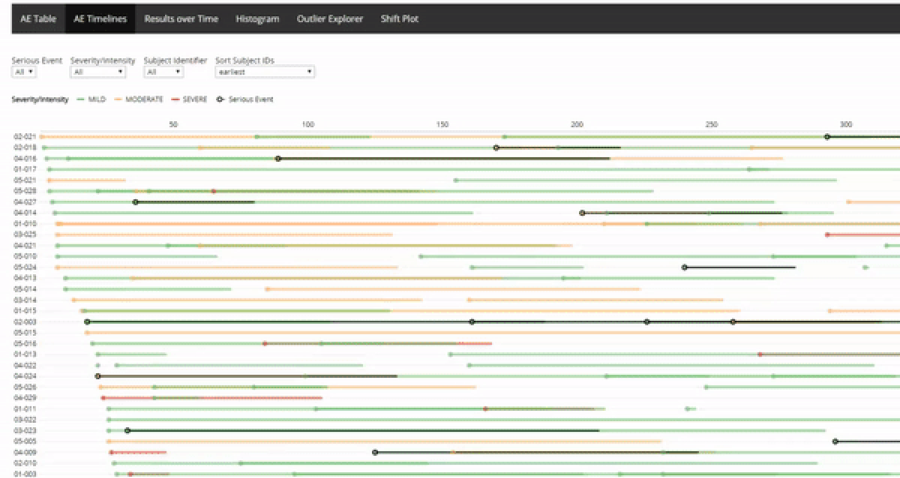
2019 AE Timelines 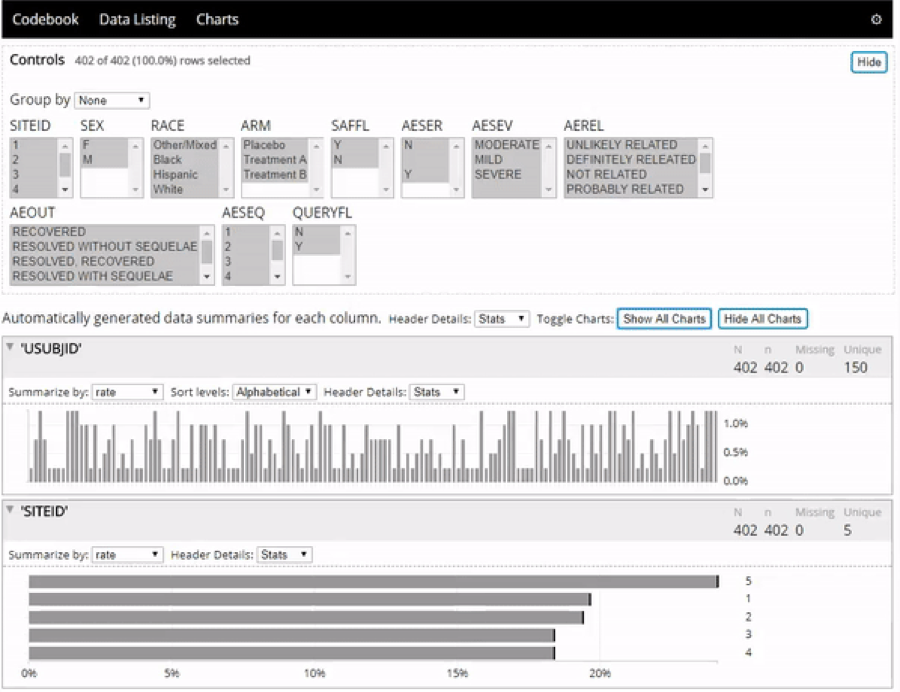
2021 Web Codebook 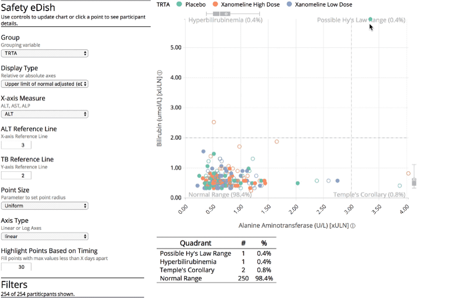
2022 Hepatic Explorer
10 original charts · last commit, top right · 25,400 lines of JavaScript · all on D3 v3
What's next?
A summer down the AI rabbit hole, with obot
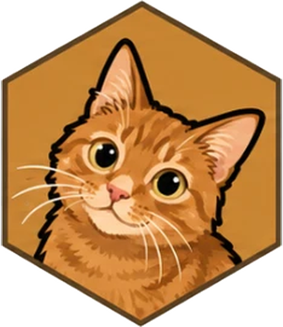
Orange the original 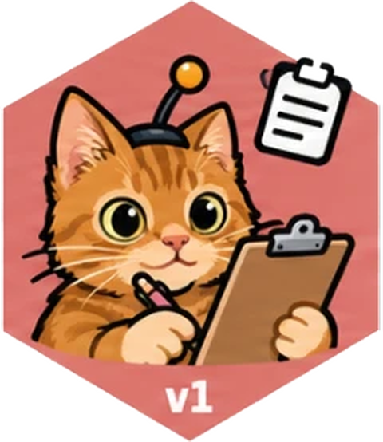
v1 a personal assistant 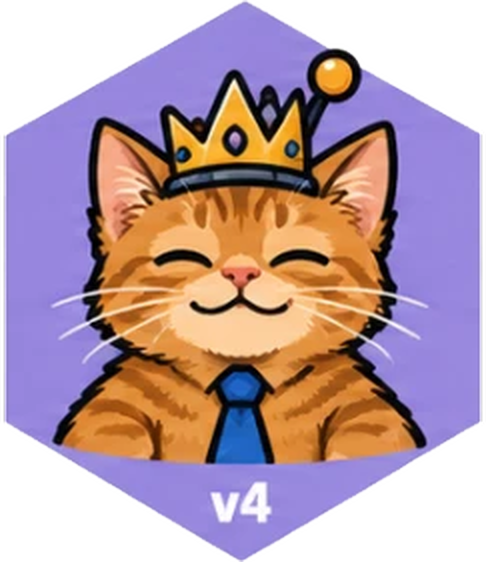
v4 the organisation 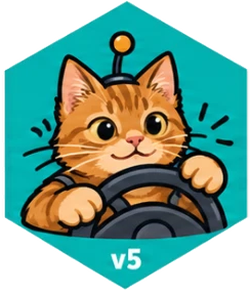
v5 goals, on Opus 5.5
Levels of AI usage
5 The dark software factory 4 The engineering team 3 The developer 2 The junior developer 1 The coding intern 0 Spicy autocomplete
obot v1 · early May
A personal assistant
What is it? A personal assistant running locally on my own laptop
Where it started The first commit is signed Orange.
Levels of AI usage
5 The dark software factory 4 The engineering team 3 The developer 2 The junior developer 1 The coding intern 0 Spicy autocomplete
obot v2 · May to June
OpenClaw
What is it? OpenClaw running on a laptop with custom config files and a few Agent.md
What changed It got its own machine, its own account and a job.
ugh. so many config files.
obot v2 · what I built
SafetyGraphics, inside an OpenRBQM workflow
meta:
Type: Report
ID: safety_histogram
Name: Safety Histogram Report
domains:
labs: Mapped_LB
widgetName: safetyHistogram
widgetSettings:
id_col: subjid
measure_col: measure
value_col: value
group_by: sex
# … the data spec …
steps:
# …
- output: Report
name: gsm.safety::RenderSafetyChartsWidget The workflow · gsm.safety v0.1.0
What it rendered · 15 May
What worked
Real work, by text
👍
Levels of AI usage
5 The dark software factory 4 The engineering team 3 The developer 2 The junior developer 1 The coding intern 0 Spicy autocomplete
obot v3 · July
Claude Code, on Fable 5
What is it? Claude Code on Fable 5, with a public roadmap, a set of skills and a bot account
What changed Fable 5 came out, and I moved everything into Claude Code.
obot v3 · what I built · 11–12 July
The first renderer took a few weeks; the next six took a weekend.
1.0 billion tokens · $1,273 at API prices · $200 a month actually paid · about 10 hours of me
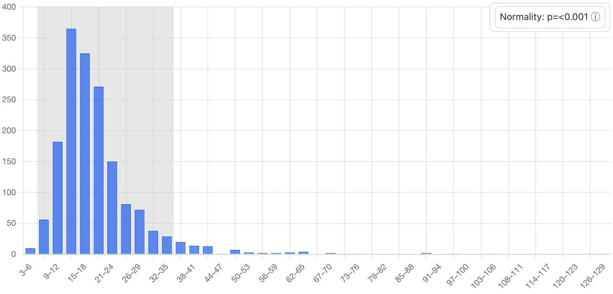
0.1 · Sat 8 am Safety Histogram 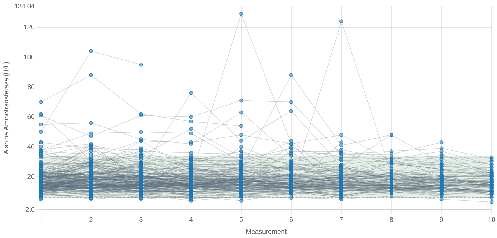
1.0 · Sat 10:30 pm Outlier Explorer 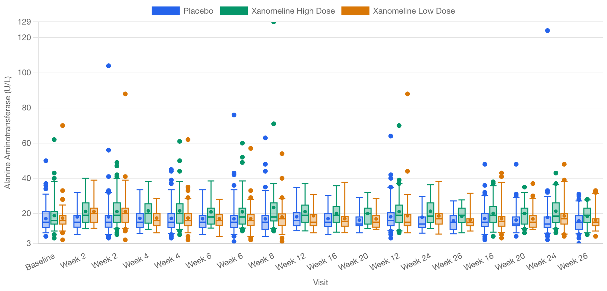
1.0 · Sat 10:30 pm Results Over Time 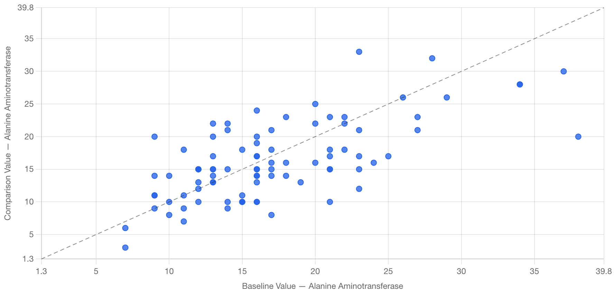
1.0 · Sat 10:30 pm Shift Plot 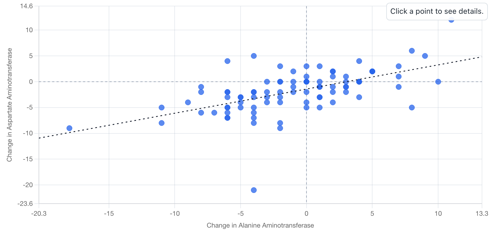
1.0 · Sat 10:30 pm Delta-Delta 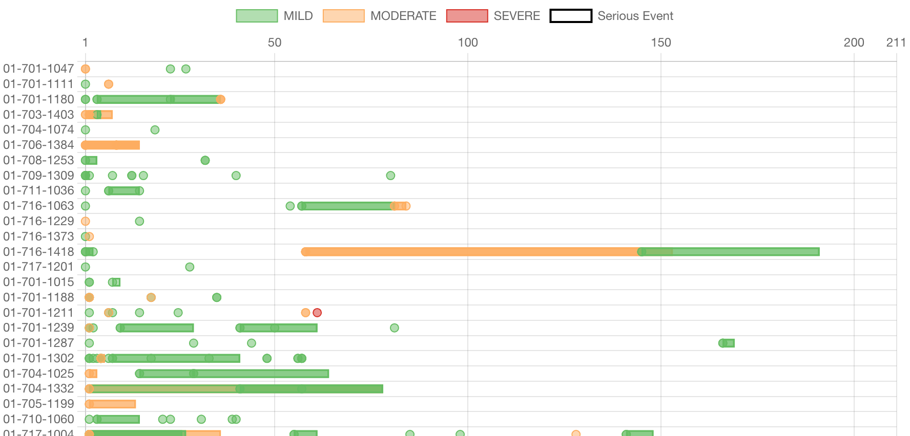
1.0 · Sat 10:30 pm AE Timelines 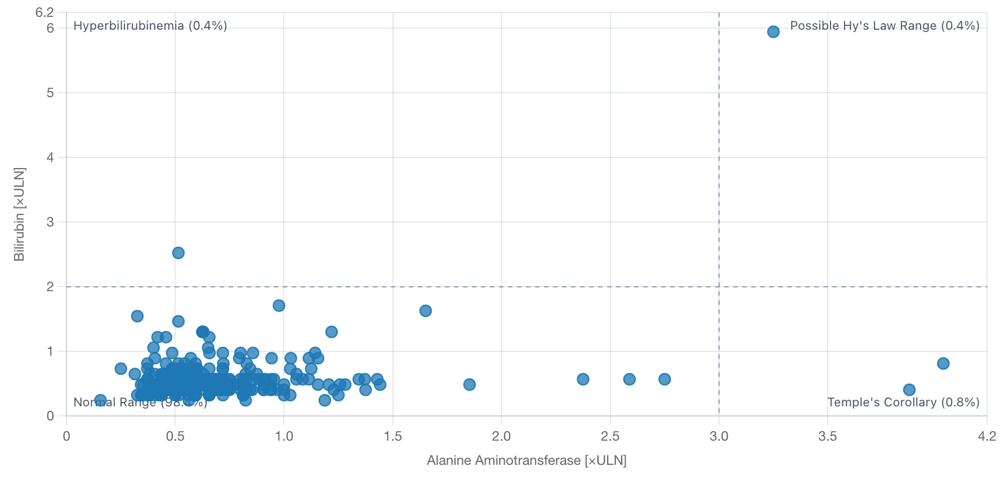
1.2 · Sun 10 pm Hepatic Explorer 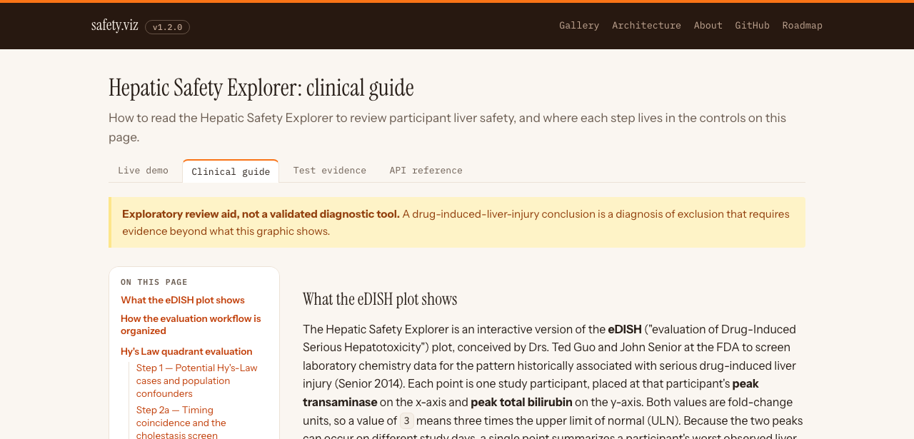
1.2 · Sun 10 pm Its clinical guide
What worked
Porting old code
👍
obot v3 · what I built next · 17 July
Papers → prompts → prototypes
Hepatic composite view · from a 2024 paper
QT explorer · from a clinical workflow
What worked
Translating research into software
👍
Levels of AI usage
5 The dark software factory 4 The engineering team 3 The developer 2 The junior developer 1 The coding intern 0 Spicy autocomplete
obot v4 · August to 10 September
The organisation
What is it? Claude Code on Opus 5, with four standing roles and a timer script, built to run without me
What changed I asked how far it could get without me in the loop at all.
obot v4 · what I built
Four roles, and a timer script
Jeremy sets strategy, decides
Concierge answers, never builds
Operating officer asks become requirements
Workers one job each, then gone
Timer script every five minutes
Fleet manager wakes, clears, exits
talks to directs dispatches
watches
clears
launches
Not an agent.
The only part with a clean record.
whaaa? can the concierge orchestrate
obot v4 · what it built
The machinery spiraled, then we cut it back
Files in obot.agent, June to October
0 100 200 300 400 500
Jun Jul Aug Sep Oct
v1–v2 v3 v4 v5
0 charts 11 charts 2 charts 7 charts
472 files
80,000 lines
10 September
Cut to 7
obot.agent the playbook
v4 472 files: 27 home-made tools, 115 drafts, 26 skills, 39 scriptsA dashboard, a morning digest, car audio briefings, a spend guard
v5 7 files: the instructions, one skill, a daily standup
obot.roadmap the hub
v4 Scripts went from 4 to 79Audits, decision logs, status pages
v5 Scripts trimmed to 61; reports keep growing, 36 to 810
Levels of AI usage
5 The dark software factory 4 The engineering teamback, with me driving 3 The developer 2 The junior developer 1 The coding intern 0 Spicy autocomplete
obot v5 · September to October
Back to building
What is it? Claude Code on Opus 5.5, with a roadmap of GitHub issues: I set the goal, and agents do the rest
What changed On 10 September I shut v4 down. 468 files of scaffolding went; seven stayed.
Levels of AI usage
5 The dark software factory 4 The engineering team 3 The developer 2 The junior developer 1 The coding intern 0 Spicy autocomplete
obot v5 and v5.5 · how it works
Same workflow, but I just set goals, answer questions and review releases
Design
Set the goal
Gather requirements
Write the work item
Draft the technical plan
Review the plan, then prompt
Build
Write the tests
Review the tests
Implement
Draft the change summary
Check code quality
Approve
Publish
Automated gates
Quality documentation
Draft the documentation updates
Finalize and release
Publish
obot v5 · the plan
Every goal becomes requirements, then tasks
Objectives 13
Chart coverage 10/36 Portfolio view 1/5 Static parity 0/2 Data loading and mapping 1/5 A local-only desktop tool 0/3 Program operations 0/3 Biomarker charts 16 /17 RBQM in the browser 3/12 A demo app ready to show 7/7 A fast check 1/2 R/Pharma keynote deck 0/3 Autonomy in obot.agent 28/34 open.csr 0/5
Requirements 17 16 of 17 done
Tasks 61 60 of 61 done
R in the browser, measured
gsm.bio's statistics
Group comparison, the picture
Group comparison, the tests
Association scatter, correlation matrix
safety.viz's shared parts, opened up
Biomarker screen
The demo app hosts the charts
Cross-tabulation and the cut rule
Stratified survival
Results out of the browser
Results out of R
bio.viz's site, styled as safety.viz's
Group comparison over time
An R app for the biomarker charts
The biomarker app as a web app
The difference grid, a second view
Releases · bio.viz and gsm.bio
Fri 2 Sat 3 Sun 4 Mon 5 Tue 6 Wed 7 Thu 8 Fri 9
One weekend, 2–4 October
obot.roadmap · GitHub releases · 18 Oct 2026
obot v5 · what I built · 2–4 October
One orchestrator, one brief, one weekend
In: one brief of about 800 words · about 22 messages from me · Claude Code, as shipped
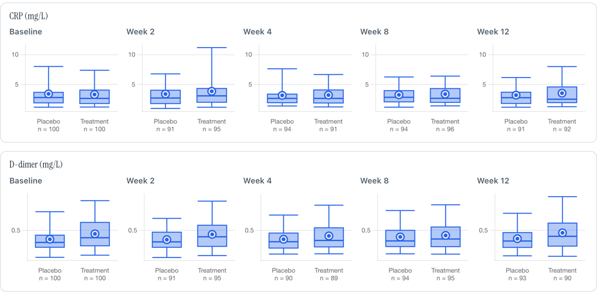
bio.viz Group comparison 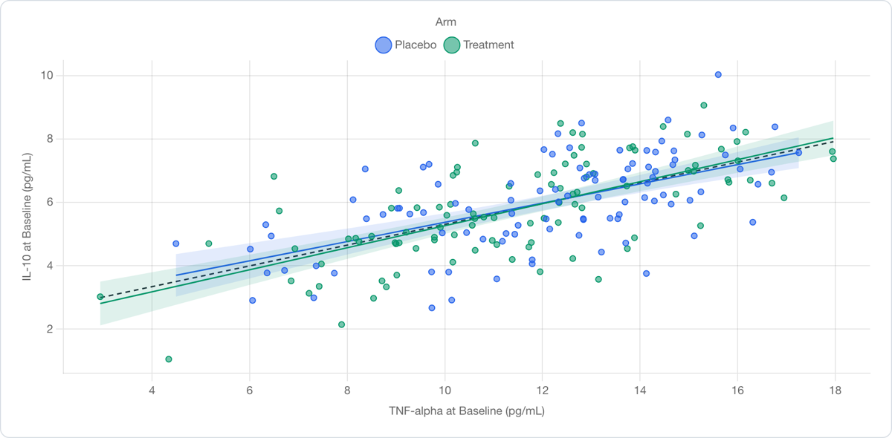
bio.viz Association scatter bio.viz Biomarker screen bio.viz Correlation matrix bio.viz Cross-tabulation bio.viz Stratified survival gsm.bio The same charts, from R the hub 12 of 12 requirements
What worked
Reviewing its own work
👍
The payoff · in numbers
What we built
Clinical Trial Tools
20
Interactive charts 14 for safety, 6 for biomarkers
3
Apps The safety.viz demo, the gsm.bio app, open.csr
7
Clinical guides About 19,000 words on how to read a chart
Technical
599
Pull requests merged 341 on charts and apps, 253 on the scaffold
43
Releases 31 of charts and apps, 17 of them safety.viz
345,000
Lines of source 43% of them are tests
5,500
Tests 2,963 of them in safety.viz
The payoff · what I built
The safety.viz demo: your own files, nothing uploaded
Costs
$11,750 at API prices. I paid $200 a month.
$6,000
$4,000
$2,000
obot v3, July: $3,329.60 on 14 days with usage
$3,330
obot v4, 1 to 19 August: $3,830.50, recorded in full
obot v4, 20 August to 10 September: at least $2,189.76. A floor.
$6,020 or more
obot v5, 11 to 30 September: at least $451.72, on three days. A floor.
$450 or more
obot v5.5, 1 to 6 October: $1,954.96 so far
$1,955 so far
v3 July
v4 Aug to 10 Sep
v5 11 to 30 Sep
v5.5 October
A floor: most of those session logs were deleted before they were read
What I paid
$200 a month
One Claude Max plan, with a weekly limit
Per million tokens
$0.97 → $0.41
Everything in July against October
Two long weekends
July: 1.0B tokens for $1,273October: 3.9B tokens for $1,639
The record has holes: June is not counted, and most of September is missing.
SDLC · quality
A lot of tests, and still an experiment
Agents test
2,963
tests in safety.viz, up from 343 in July.
Agents review
40 of 52
agents on the October weekend were reviewers. One caught a bad p-value.
A person signs
Not yet
Nothing here has had a formal review.
Tests and reviews are cheap now. The signature is not.
What evidence do you have?
Lots of tests. No sign-off.
Orange, with a question
What we learned
What can we do today?
The question, one last time
What can we actually do with AI agents right now?
Real work across the development pipeline.
Agents write code.
Packages, tests, config
Humans own the decisions.
Strategy, architecture, judgement
The gap
Don't judge AI by what you can do on a trial.
Illustration, not data
Frontier capabilities
Clinical trial tools
What you see
at work
What you're
not seeing
A year ago
Today
The rules at work are right. They also show you a fraction of what these tools can do.
How fast it is moving
Frontier is moving extremely fast
Nov Dec Jan Feb
Mar Apr May Jun
Jul Aug Sep Oct
2025 2026
24 Nov 2025 Opus 4.5
Jan OpenClaw
7 Apr Mythos
9 Jun Fable 5
9 Jul GPT-5.6
24 Jul Opus 5
1 Sep Fable 5.1
22 Sep Opus 5.5 · GPT-6
21 Oct today
v1 early May assistant
v2 May–Jun OpenClaw
v3 Jul Fable 5
v4 Aug–Sep Opus 5
v5 Sep–Oct Opus 5.5
Did not try
MCP tool protocol, since Nov 2024
Open-weight models Qwen 3.6 Apr, 3.8 Aug
Muse Meta’s personal agent, 8 Sep
Jev TypeSafe’s decision model, 15 Sep
Dots OpenAI’s always-on agents, 29 Sep
an obot version ran on it
another release
How fast it is moving
New ways of working, written up in public.
FDA 6 May · US FDA
Elsa 4.0, with custom agents
…the agency’s internal AI tool available to all FDA staff, from scientific reviewers to investigators.
FDA press release · Elsa 4.0 and a consolidated data platform
23 Sep · Rails World keynote
Done coding by hand
At 37signals, a couple of weeks ago, we made the decision that it clearly means we’re done writing code by hand.
David Heinemeier Hansson, creator of Ruby on Rails · as transcribed in The Pragmatic Engineer , 1 Oct
15 Oct · Claude Code team
Review, moved to machines
We didn’t remove review. But we did move most of the reading to machines…
Addy Osmani, Morgan Westlee Lunt and Qing Wang · How the Claude Code team does code review
16 Oct · Anthropic research
Agents outwork people
Agent hours worked outnumber human hours 6 to 1.
How employment is changing at Anthropic
From my reading list, and the FDA
The gap, a year from now
We're at the beginning.
Illustration, not data · after today, three guesses
Slow
Steady
Fast
Steady
Fast
Exponential
Frontier capabilities
Clinical trial tools
A year ago
Today
A year from now
Nobody can tell you what these tools will do next year. They are not going away.
We can think bigger
“I think that most people are underestimating just how radical the upside of AI could be, just as I think most people are underestimating how bad the risks could be.”
Dario Amodei · Machines of Loving Grace · October 2024
What the builders predict
Big forecasts. Not crazy, given the last year.
50–100 years in 5–10
…my basic prediction is that AI-enabled biology and medicine will allow us to compress the progress that human biologists would have achieved over the next 50-100 years into 5-10 years.
Dario Amodei, Anthropic · Machines of Loving Grace · Oct 2024
The end of disease?
I think that’s within reach. Maybe within the next decade or so, I don’t see why not.
Demis Hassabis, Google DeepMind, asked “The end of disease?” · 60 Minutes · Apr 2025
What's next: my best guess
Closing the gap means more medicines faster!
Illustration, not data
Frontier capabilities Clinical trial tools
A year ago
Today
A year from now
Fast
Slow
Fast
Some day soon
Time to develop one drug
Sources: BIO 2021 · Wouters 2020 · DiMasi 2016
Today
10+ years · $1–2.6 billion per approved drug
90% of candidates fail
BIO 2021 : 7.9% reach approval
Next year, slow
Real marginal improvement,
but still years
Next year, fast
Paradigm change, soon
Some day soon
Months, maybe weeks
Hassabis · the COVID mRNA vaccines took 9 months (Amodei )
0 5 10 15 years
Closing the gap
Try it on something that's yours.
1 Pick an agent Claude or Codex, $20 for a month. Others are fine too. 2 Set up GitHub A free account is fine. 3 Pick a development process For R: Hadley Wickham's R Packages book, free at r-pkgs.org . 4 Write a prompt Make me an Open Source R package that does X. Include a working example and user guide in GitHub pages. Follow all of the best practices in Hadley Wickham's R Packages book.
5 Ask questions! Explain how you did X
What are agents good at now?
Teaching me things!
👍
Mixed feelings
Coding feels completely different than it did a year ago.
It's kind of fun, but I'm certainly not working less.
But, what's next?
More medicines, faster!
And no more powerpoint!
Data Centers. Rogue Agents.
100 years of innovation!
Acknowledgements
Thanks to my amazing co-workers, patient bosses, very patient family and all of my open source collaborators!
R
Reserves
Reserve slides
Demoted from the main deck, kept in case. Each one's notes say when it was demoted, and why.
obot v5 · what I built
The whole roadmap is one tree of GitHub issues
increased autonomy in obot.agent Chart coverage Biomarker charts Data loading and mapping open.csr R/Pharma 2026 keynote deck Portfolio view Static parity A local-only desktop tool Program operations Objective Released · task done Review · task in review Ready Backlog · task open Retired task obot.roadmap · as of 7 October 2026 · 44 retired requirements and 25 with no objective not shown
obot v5 · what I built
An objective becomes requirements, then tasks
Biomarker charts 15 requirements 47 tasks The group comparison chart opens on trends over time and drills down to one visit 6 The demo app hosts the biomarker charts, on the files and mapping a study already has 5 Association scatter and correlation matrix 4 gsm.bio's statistics: the package, a synthetic biomarker study and every test the charts will print 4 Group comparison, the picture: bio.viz's first chart, drawn and drillable 3 Group comparison, the tests: R's results on the chart, and the chart from R 3 Cross-tabulation and the shared cut rule 3 Stratified survival, and survival rows in the biomarker screen 3 Results out of the browser: titles, footnotes, PNG and specifications 3 Results out of R: static twins, RTF tables and batch runs 3 R in the browser, measured: the connection a chart uses to ask R for a statistic 3 bio.viz's site is laid out and styled as safety.viz's is 3 Biomarker screen: one row per biomarker 2 safety.viz's shared parts opened to a second library 1 the group comparison's difference grid as a second opening view 1 Released · task done Review · task in review Backlog · task open requirement task obot.roadmap · as of 7 October 2026 · one bead per task
What worked
A definition of done
👍
What didn't
No chart releases
👎
obot v5 · the plan
Every goal becomes requirements, then tasks
One goal · Biomarker charts
Biomarker charts 15 requirements 47 tasks The grou… 6 The dem… 5 Associati… 4 gsm.bio'… 4 Group… 3 Group… 3 Cross-ta… 3 Stratified… 3 Results… 3 Results… 3 R in the… 3 bio.viz's… 3 Biomark… 2 safety.viz… 1 the grou… 1 obot.roadmap · as of 7 October 2026 · one bead per task
Every goal · the whole roadmap
increased autonomy in obot.agent Chart coverage Biomarker charts open.csr Portfolio view Static parity obot.roadmap · as of 7 October 2026 · 44 retired requirements and 25 with no objective not shown
obot.roadmap · 7 October 2026 · one bead or cell per task
Levels of AI usage
5 The dark software factory 4 The engineering team 3 The developer 2 The junior developer 1 The coding intern 0 Spicy autocomplete
obot v5.5 · October
Opus 5.5
What is it? The same tree of issues on Opus 5.5, with one orchestrator working from a plain brief
What changed The model got better. Orchestration now works from a plain brief.
Upstream · planning
Agents can help a lot with planning
Upstreamour scaffold
Planning
Requirements
Designs
Phase gates
The artifact is what a person reviews
Migration assessment Data requirement Design document Layout options Roadmap plan Decision record Release demo Qualification evidence Release review guide Org chart
Examples from my side project, standing in for the team's
What are agents good at now?
Drafting documents!
👍
What are agents bad at now?
Setting priorities
👎
Downstream · operations
Agents can help a lot with operations
TODO Refactor this slide
One repo per study, one hub to run themMock data
A study repoone of 20
Its own configuration
Its own snapshot workflow
Issues, opened by the schedule
A weekly check against its monitoring plan
The hubone for all of them
One schedule for every study
A dashboard, updated daily
Request forms
A 15-step study set-up guide
Study repo
Wk 1
Wk 2
Wk 3
Wk 4
Wk 5
Wk 6
Wk 7
Wk 8
Plan check
MOCK-101
MOCK-101, week 1: snapshot run MOCK-101, week 3: snapshot run MOCK-101, week 5: snapshot run MOCK-101, week 7: scheduled OK
MOCK-104
MOCK-104, week 1: snapshot run MOCK-104, week 5: snapshot run !
Flagged
MOCK-103
MOCK-103, week 2: snapshot run MOCK-103, week 4: snapshot run MOCK-103, week 6: scheduled MOCK-103, week 8: scheduled OK
today
snapshot run
scheduled
Downstreamour scaffold
Operations
Study set-up
Snapshot schedules
Monitoring plan checks
So, what now?
Before R/Pharma 2027, build one thing with an agent.
Then come back and tell us how it felt.
What's next: my best guess
Closing the gap means more medicines faster!
Illustration, not data · after today, my best guess
Steady
Fast
The gap: medicines
that could come sooner
Forecast: 50–100 years of biology in 5–10
Dario Amodei, 2024
Designing one drug today: ~10 years, billions of dollars
Frontier capabilities
Clinical trial tools
A year ago
Today
A year from now
Like Dario says: most people are underestimating just how radical the upside of AI could be.
We can think bigger
A century of medicine in a decade?
Biology and medicine at today's pace
2026 2051 2076 2101 2126
The same progress, if the forecast holds
5–10 years: “the compressed 21st century”
Like Dario says: most people are underestimating just how radical the upside of AI could be.
Machines of Loving Grace, 2024 · grain of salt included
The question
What can we actually do with AI agents right now?
The question
What can we actually do with AI agents right now?
Orange safetyGraphics 2016–2021 OpenRBQM 2021–2025 AI in the Clinical Trial Pipeline Q4 2025 Experiments on the AI Frontier summer 2026 What we learned now
The question
What can we actually do with AI agents right now?
Orange safetyGraphics 2016–2021 OpenRBQM 2021–2025 AI in the Clinical Trial Pipeline Q4 2025 Experiments on the AI Frontier summer 2026 What we learned now
The GxP gap
Don't judge AI by what you can do on a trial.
Illustration, not data
What the tools can do
Frontier capabilities
Clinical trial tools
The gap
A year ago
Today
On a project of your own
The newest model, the week it ships
Agents that write, run, test and fix
You can start tonight
On a clinical trial
Approved tools and models
A person checks every output
New capability arrives slowly
Rightly so
The rules at work are right. They also show you a fraction of what these tools can do.
The GxP gap
Don't judge AI by what you can do on a trial.
Illustration, not data
Frontier capabilities
The newest model, the week it ships
Clinical trial tools
Approved, validated, slower. Rightly so.
The gap
A year ago
Today
The rules at work are right. They also show you a fraction of what these tools can do.
The question, one last time
What can we actually do with AI agents right now?
Real work on trials, today. As long as a human owns every decision.
On trials, today
👍 Writing software
👍 Generating evidence
👎 Setting priorities
👎 Making judgements
That's the GxP version. Outside GxP, they can do a lot more.
The question, one last time
What can we actually do with AI agents right now?
Real work on trials, today. As long as a human owns every decision.
On a trial, that's the ceiling. Outside GxP, it's the floor.
The question, one last time
What can we actually do with AI agents right now?
Not at setting priorities
Generating evidence, but not judgement
Closing
Closing slide: image to come
Placeholder, added 2026-10-05. Jeremy is having an image model build this slide.
What the outline has for the close: the question, one last time (“What can we do right now?”), then Orange's thank-you
Links to carry: the deck, the diary, the repos; a QR code
Drop the image in keynote/assets/ and this becomes an s-photo slide
The bridge
Open, software-shaped workflows are agent-ready.
So what happens when the agent does more of the work?
The experiment
The goal
Build a modern version of safetyGraphics — with everything we've learned from gsm as the foundation
See just how high we can climb the levels of automation
Experiment
Have some fun!
A disclaimer
This is really really not GxP
(but there are A LOT of tests included …)
The plan · July
Keep, modernize, borrow
Keep
The expert clinical workflows. Click a point, see the patient. Open source.
Modernize
A charting engine nearly a decade old, rebuilt with data contracts and tests.
Borrow from gsm
A quality framework that was designed for GxP from the start.
“The outputs need to be checkable — by a person, by a test suite, and by another agent.”
0 1 2 3 4 5 Level 4 · the engineering team
obot v3 · July
A plan, a playbook and an identity
1
obot.roadmap “the plan and the memory”: requirements and tasks as issues, on a public site 2
obot.agent “the playbook”: conventions and skills that every session loads 3
obotclaw[bot] “the identity”: the agent's commits and pull requests are its own, not mine
The question safetyGraphics always got
“Is it validated?”
Then
“Not really. It's exploratory.”
Now
2,185 unit and 374 browser tests, each tied to a requirement.
What are agents good at now?
Catching real errors
👍
10 September
I shut it down
TODO (Jeremy): your account, in your words. What the record has:
“The agent structure held… it never produced a release for him to review.” (agent-written hub diary)
475 files of scaffolding removed; seven left
Back to one requirement per session, with a definition of done, and me driving
The “mixed feelings” from diary #8: here, or in beat 4?
Experiment
Agents are great at experiments
Kept going
bio.viz and gsm.bio: six biomarker charts, every test computed by R. Two releases each.
Stopped at a prototype
Safety narratives drafted by AI.
What are agents good at now?
Running experiments!
👍
June to October
What it took
At API prices
9 July – 19 August $7,124 20 August – 18 September $2,470 or more 1 – 5 October $1,865 What I actually paid $200 a month
On GitHub, since 10 June
Pull requests merged 496 Releases 32 Issues opened / closed 704 / 483 Repositories 14
safety.viz · 5 October
Where it stands today
14 releases since 11 July — the latest, v1.9.1, on 4 October
13 charts — 8 stable, 5 marked Experimental
In R: 9 of the 13 — the other 4 are in a release candidate waiting on my review
Not done: the 22 figures in the FDA safety guidance — all specified, none drawn
The goal
Modernize safetyGraphics, using the gsm framework
Starting from
10
legacy renderers, last touched between 2019 and 2022
Which is
25,400
lines of JavaScript, in 730 files
Built on
D3 v3
from 2013. Today: Chart.js 4, inside gsm's workflows and tests
Where we put the effort
Plan → build → run: we invest at both ends
1
Plan Requirements, designs and phase gates our scaffold 2
Build Vendor coding agents, plus our shared context and conventions maintained 3
Run Study set-up, snapshot schedules, checks against the monitoring plan our scaffold
Build
“We just let the coding agent deal with it”
What we stopped building
A coding agent of our own, steered step by step.
What we maintain
One shared context file for about 40 repos, plus three skills.
How we build the scaffolds
Deterministic tools first, agents on top
1
Framework GitHub as the system of record: issues, a lifecycle, decision records reliable 2
Tools Scripts and Actions that compute the evidence reliable 3
Skills Version-controlled procedures an agent loads for a task reliable 4
Bots Agents acting on a schedule, under their own identity still learning
Plan · gsm.roadmap
Agents draft; people approve
1
Backlog business requirement 2
Gathering data specification 3
Design analytics spec, for business sign-off 4
Development implementation plan, sub-issues per repo 5
Release testing, knowledge transfer 6
Done every gate signed off by a person
Orange, supervising
How we built it
What it cost, how it was run, and how fast it moved.
OpenRBQM
OpenRBQM, in more detail
TODO (Jeremy): how OpenRBQM works, before any AI
The packages, and who is in the PHUSE collaboration
One pipeline for every metric: input, transform, analyze, threshold, flag, summarize
A diagram or a screenshot would beat bullets
Downstream · operations · what changed
The hub replaced spreadsheets and email
Before
Schedules in several Excel trackers
Now
Merge a schedule, and issues open in each study repo
Downstreamour scaffold
Operations
Study set-up
Snapshot schedules
Monitoring plan checks
What changed
+50%
releases compared with last year. Issues and pull requests roughly doubled. Not a controlled productivity study.
TODO (Jeremy): newer numbers, more detail, and a visual
obot v5 · the scaffold that stayed
I review releases and answer questions
1
Objective What I want, in a sentence or two 2
Requirements Sized for one session, each with a definition of done 3
Tasks One pull request each, in the repo where the code lives 4
Release candidate Three reviewer agents read it first 5
Release I review it, and answer questions on the way
Written down on 11 September as three short standards: tracking, sessions and releases
obot v5 · what I built · 10–30 September
A new scaffold, a candidate and an experiment
The scaffold, rewritten — two releases on 11 September
gsm.safety v1.2.0, as a candidate — 38 pull requests in 3 days
The Patient Journey Explorer — with narratives drafted by AI
What worked
A definition of done
👍
What didn't
No chart releases
👎
obot v4 · quietly wrong
“Nine cases in one night of something reporting success while having done nothing.”
— Obot, on itself · developer diary #8, 20 August 2026
What worked
The structure held
👍
What didn't
Knowing when it has failed
👎
1
Section
Section divider
Each section takes the next hue of the spectrum: data-hue="0" … "6".
Layout · bullets
A headline that makes one claim
First supporting point — with a quieter aside
Second supporting point
Third supporting point
Layout · quote
“What can we actually do with these tools right now?”
— the question running through the developer diary
Layout · big number
1B
tokens in a weekend — a single figure with one line of context.
Layout · two columns
Before / after
Layout · screenshot
A picture of the real thing
img src="assets/…" goes here
Caption · source link
?
Close
Thank you
jwildfire.github.io/keynote
A few quiet years
What we did, and what we didn't
We showed Open-source, interactive graphics work in clinical trials.
We didn't Change the industry standard for how people monitor safety.
The first question Is it validated?
In every talk. The answer then: Not really. It's exploratory
Commits a year,
four repositories
2016: 35 commits (safety-histogram 35) 35 2016
2017: 47 commits (safety-histogram 47) 47 2017
2018: 491 commits (safetyGraphics 179, hep-explorer 264, safety-histogram 48) 491 2018
2019: 807 commits (safetyGraphics 544, hep-explorer 164, safety-histogram 99) 807 2019
2020: 169 commits (safetyGraphics 104, safetyCharts 55, hep-explorer 8, safety-histogram 2) 169 2020
2021: 359 commits (safetyGraphics 261, safetyCharts 87, hep-explorer 11) 359 2021
2022: 96 commits (safetyGraphics 51, safetyCharts 37, hep-explorer 8) 96 2022
2023: 79 commits (safetyGraphics 28, safetyCharts 51) 79 2023
2024: 2 commits (safetyCharts 2) 2 2024
2025: 0 commits 0 2025
After 2021 job change
What evidence do you have?
Written requirements and a manual test script for every chart.
The rule that doesn't change
AI-written code still needs a human owner
A person owns the requirements.
A person owns the risk decision.
A person must be able to explain why the code works.
A person must be able to explain why it is safe enough for medical research.
Lessons · Orange's answers so far
What are agents bad at now?
👎
Setting priorities The team at work Working without me obot v2 and v5.5 Knowing when it has failed obot v4 Being concise Every day Remembering Every day Arithmetic They should write code instead
Lessons · Orange's answers so far
What are agents good at now?
👍
Writing code The team at work · Q4 2025 Porting old code obot v3 The standard SDLC The team at work · Q2 2026 Translating research into software obot v3 Drafting documents The team at work Running experiments obot v5.5 Teaching me things Getting started Reviewing its own work obot v5.5
What's next: my best guess
Closing the gap means more medicines faster!
Illustration, not data · after today, my best guess
Slow
Steady
Fast
Steady
Fast
Exponential
Frontier capabilities
Clinical trial tools
A year ago
Today
A year from now
What the gap means
The gap is measured in medicines.
One drug, todayto design it · Hassabis
“ten years and billions of dollars”and about 90% of drug candidates that enter clinical trials fail (Sun et al., 2022 )
COVID mRNA vaccinesthe fast case
9 monthsAmodei : they “arguably should have been approved in ~2 months”
The forecastto design it · Hassabis
Months, maybe weeks“We can maybe reduce that down from years to maybe months or maybe even weeks.”
0 2 years 4 6 8 10 years